Отчеты о трафике
Когда ClickHouse включено, страница «Отчеты» становится доступной в сети ntopng GUI в меню «Панель мониторинга» > «Отчеты».
В этом разделе описывается, как использовать эту функцию для создания отчетов о трафике по требованию или автоматически/периодически и получать уведомления об их доступности.
Примечание
Обозреватель исторических потоков и отчеты доступны только для ntopng Enterprise M или выше с включенным ClickHouse.
Отчеты содержат графики общего трафика отслеживаемых интерфейсов, локального и удаленного трафика, трафика локальных сетей, а также трафика, сгруппированного по:
Протоколы приложений (например, HTTPS, Skype)
Страны
Локальные хосты (хосты, принадлежащие локальным сетям) и удаленные хосты
Автономные системы
На рисунке ниже показан пример отчета, созданного по ntopng:
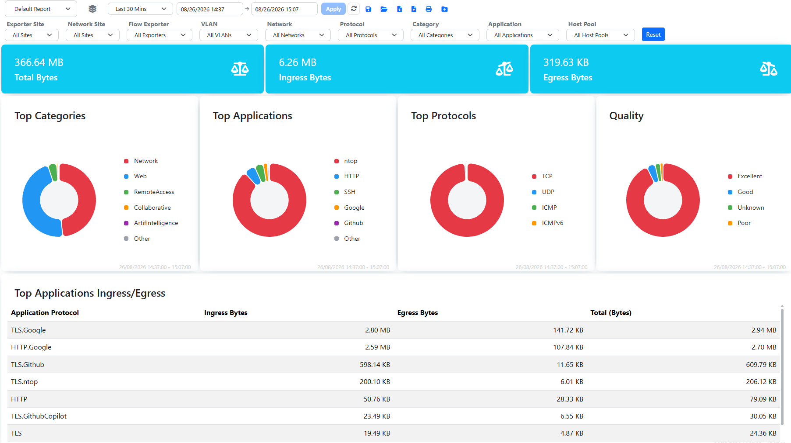
Предварительный просмотр отчета
ntopng реализует гибкий механизм создания информационных панелей, который позволяет определять пользовательские отчеты с помощью графических компонентов и источников данных. Это означает, что в соответствии с требованиями пользователя можно определить несколько шаблонов для создания отчетов с диаграммами и значимыми данными. для конкретного пользователя, сети и варианта использования. Раскрывающийся список в верхней части страницы «Отчеты» позволяет выбрать желаемый шаблон, который будет использоваться для создания отчет из имеющихся.
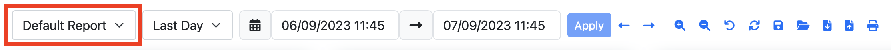
Шаблоны отчетов
Отчет строится с использованием информации о трафике за выбранный период времени. Выбрать произвольный интервал времени можно с помощью кнопки раскрывающийся список и средство выбора диапазона вверху страницы «Отчеты». Также доступны временные интервалы фиксированной ширины (например, за последний час, день, неделя и т. д.), создавая отчет, охватывающий временной диапазон, начинающийся с настоящего момента и идущий назад во времени до тех пор, пока не будет нажата кнопка интервал достигнут.
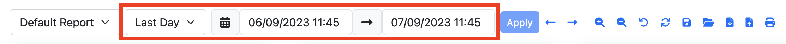
Временной интервал отчета
Сохранить/открыть отчеты по ntopng
После выбора шаблона отчета и временного окна отчет создается и отображается. Его можно сохранить, нажав на кнопку Кнопка «Сохранить».

Кнопка сохранения отчета
В диалоговом окне будет запрошено имя отчета. При нажатии кнопки «Сохранить» отчет сохраняется на диске того же компьютера, на котором работает ntopng, как файл JSON. содержащий всю информацию, необходимую для перезагрузки того же отчета в будущем для дальнейшего анализа.
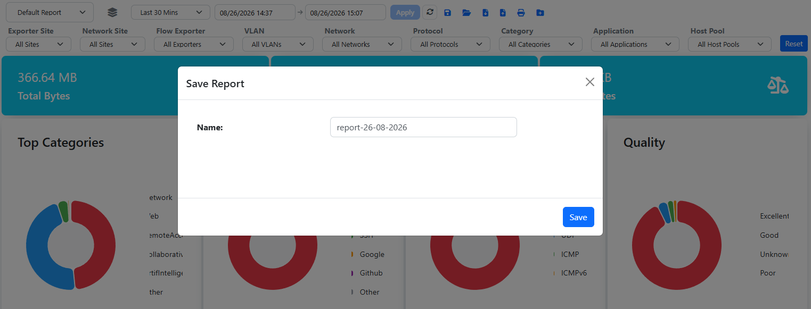
Сообщить о сохранении
Для перезагрузки ранее сохраненного отчета доступна кнопка Открыть.
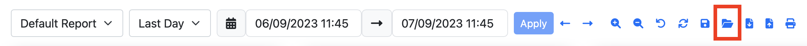
Кнопка открытия отчета
Диалоговое окно позволит вам выбрать отчет из ранее сохраненных в ntopng.
Примечание
В случае нескольких пользователей отчеты, созданные администратором, видны всем администраторам, вместо этого отчеты, созданные непривилегированным пользователем, видны только один и тот же пользователь (и ограничения видимости трафика будут применяться в соответствии с настроенными правами пользователя), а непривилегированный пользователь не сможет видеть отчеты, созданные администраторами.
Через этот же диалог также можно удалить отчет (выбранный) или все отчеты.
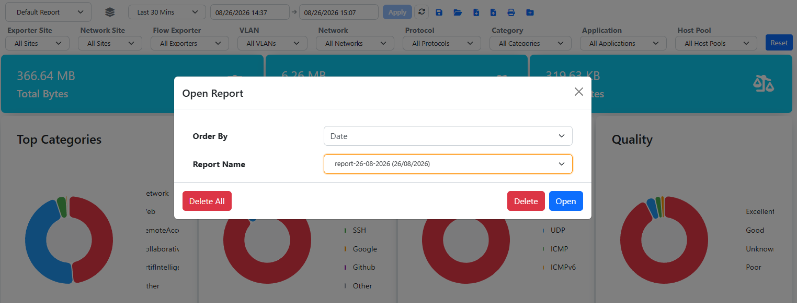
Открытие и удаление отчета
Предупреждение
Отчеты автоматически удаляются через некоторое время в соответствии с настроенным сроком хранения данных. Пожалуйста, прочтите раздел «Хранение данных» для получения дополнительной информации.
Резервное копирование/загрузка отчетов локально
Помимо сохранения отчетов на машине, на которой работает ntopng, также можно загрузить отчет локально, чтобы сохранить резервную копию или переслать его кому-либо еще. Чтобы загрузить резервную копию отчета, нажмите кнопку «Скачать». Будет загружен файл JSON, содержащий всю информацию, необходимую для перезагрузки отчета. на той же или другой установке ntopng для визуализации.
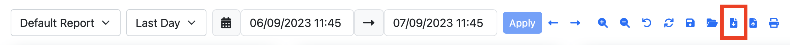
Кнопка загрузки отчета
Чтобы перезагрузить отчет из ранее загруженного файла JSON, нажмите кнопку «Загрузить».

Кнопка загрузки отчета
Диалоговое окно позволяет загрузить резервную копию отчета в формате JSON и визуализировать ее в формате ntopng. Обратите внимание, что этот отчет только визуализируется, его копия не сохраняется. машина работает ntopng. Однако его также можно сохранить, нажав кнопку «Сохранить», как описано в предыдущем разделе.

Загрузка отчета
Распечатать отчет (PDF)
Также доступна функция печати для печати или создания PDF-файла из отчетов. Это можно сделать, нажав кнопку «Печать».
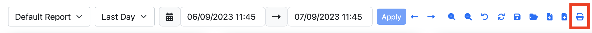
Кнопка печати отчета
При печати отчета механизм рендеринга делает все возможное, чтобы все графические компоненты соответствовали стандартным форматам печати (например, А4).
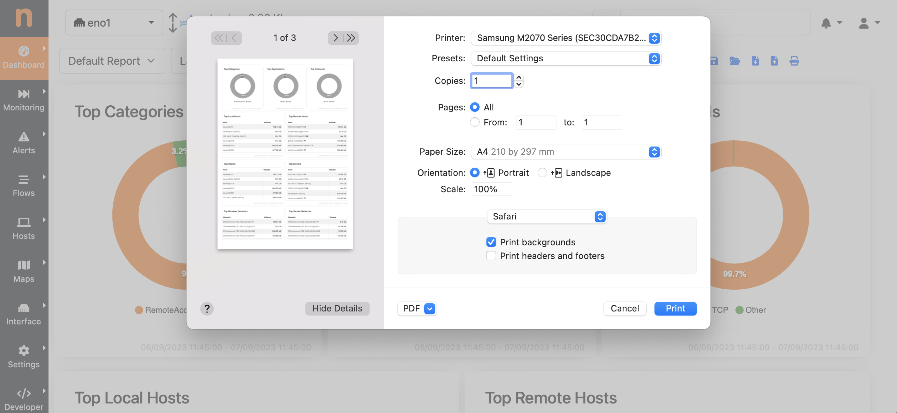
Печать отчета
Автоматические отчеты и уведомления
Помимо создания отчетов вручную, в ntopng также можно включить автоматические отчеты. Это означает, что ntopng может построить например, ежедневные отчеты каждую ночь с информацией о дорожном движении за последние 24 часа.
Примечание
Периодические отчеты доступны только в ntopng Предприятии L или выше.
Чтобы включить это, глобальная настройка доступно в разделе «Настройки» -> «Настройки» -> «Отчеты» -> «Генерация ежедневных отчетов».

Автоматические настройки отчета
Включив создание ежедневных отчетов, ntopng генерирует отчет для каждого интерфейса каждый день. Есть возможность отключить автоматический отчеты по выбранным интерфейсам через настройку Интерфейс -> Подробности -> Настройки -> Создать ежедневные отчеты, которая включается по умолчанию после включения глобальной настройки.
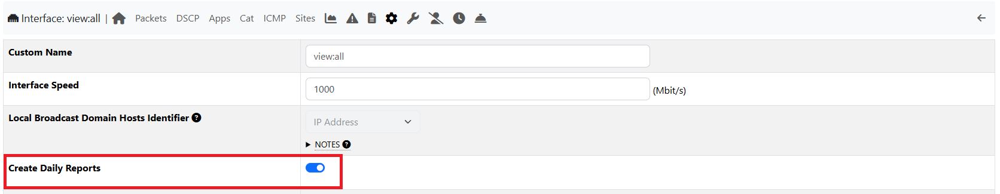
Настройки интерфейса автоматического отчета
Когда новый отчет создан и доступен, ntopng также может отправить уведомление пользователю, например. отправив электронная почта. Чтобы включить уведомления, необходимо настроить конечную точку и получателя уведомлений. В конфигурации получателя В качестве типа уведомления следует выбрать «Отчеты о трафике».

Получатель уведомления об отчете
Ниже вы можете найти пример уведомления по электронной почте, отправленного пользователем ntopng, чтобы уведомить пользователя о наличии нового ежедневного отчета. с прямой ссылкой для перехода к актуальному отчету.
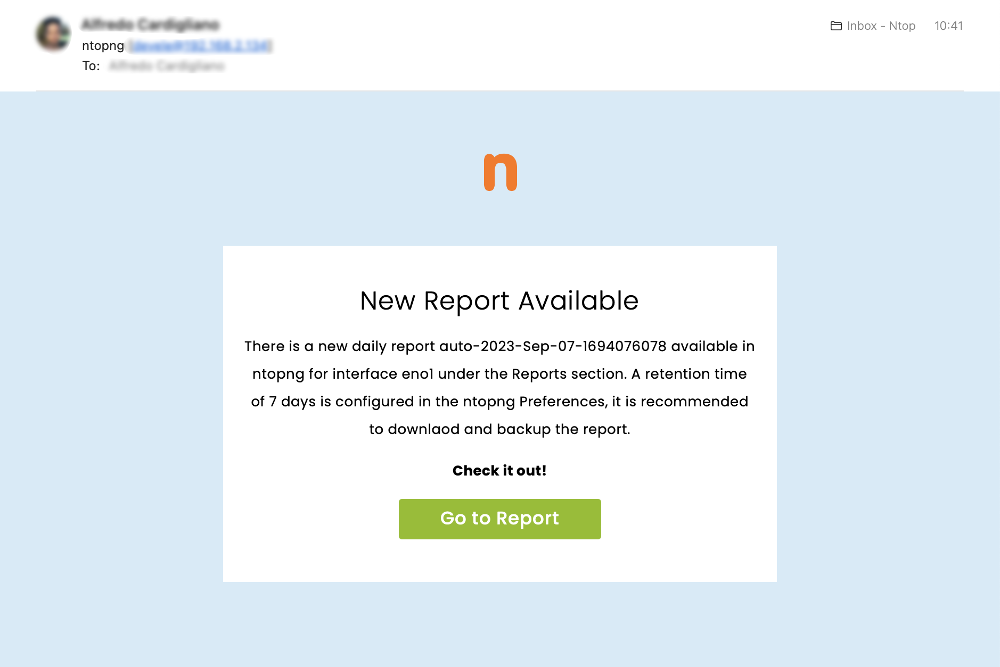
Предварительный просмотр уведомления по электронной почте
Хранение данных
Все отчеты, хранящиеся на ntopng, как созданные вручную, так и автоматически, могут быть автоматически удалены на ntopng через некоторое время. чтобы реализовать политику хранения данных и избежать заполнения диска из-за неопределенного роста количества отчетов. Время хранения данных по умолчанию настроено в ntopng, его можно изменить в «Настройки» -> «Настройки» -> «Отчеты» -> Раздел «Сохранение данных отчетов».
Настройки хранения данных отчета
Редактор отчетов
Редактор отчетов позволяет создавать собственные отчеты путем создания новых шаблонов. Доступна коллекция виджетов, их можно комбинировать для определения шаблона.
Примечание
Редактор отчетов доступен только в ntopng Enterprise XL.
Страница «Панель управления» -> «Отчет о трафике» содержит кнопку на панели инструментов для создания новый шаблон, как показано на рисунке ниже.

Кнопка «Новый шаблон»
Появится диалоговое окно для настройки имени шаблона.

Диалоговое окно «Новый шаблон»
После создания нового шаблона он становится доступным и его можно выбрать. из раскрывающегося списка выбора отчетов.
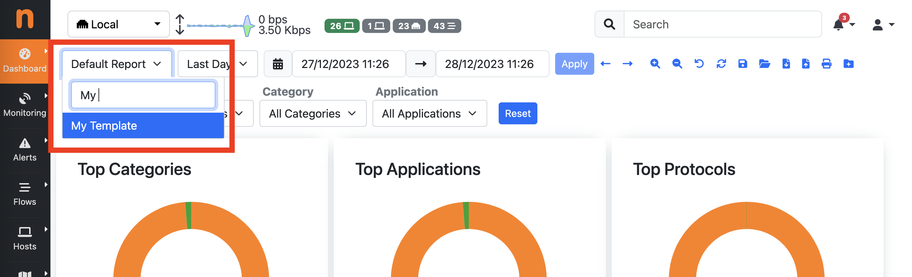
Выбор шаблона отчета
При выборе нового шаблона отображается пустой отчет, поскольку шаблон изначально пусто и требует настройки.

Пустой шаблон отчета
Переключатель редактора шаблонов доступен на панели инструментов, когда пользователь шаблон выбран. Это позволит вам войти в режим редактирования.

Кнопка редактора отчетов
При входе в режим редактирования появляется новый набор инструментов для редактора шаблонов. Панель инструментов включает кнопки для добавления виджетов в шаблон или удаления. шаблон. При нажатии на кнопку «Добавить виджет» появляется диалоговое окно с список доступных виджетов, которые можно добавить в шаблон.
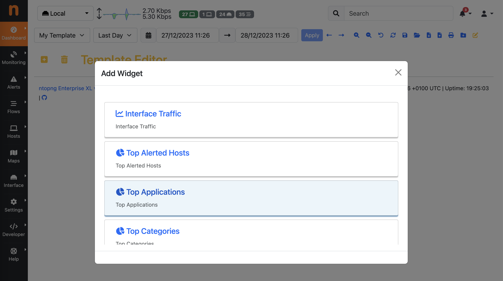
Виджеты отчетов
При добавлении виджета он добавляется в шаблон с конфигурацией по умолчанию.

Шаблон отчета
Виджеты можно систематизировать и сортировать, перетаскивая их.
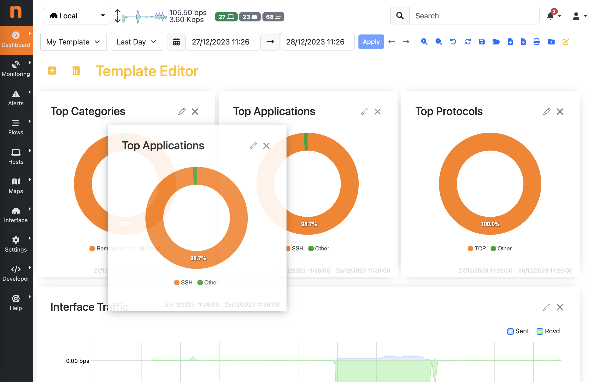
Виджеты Драд и Дроп
В режиме редактирования на самих виджетах появляется несколько элементов управления, включая кнопки для редактирования конфигурации виджетов или удаления их из шаблона.
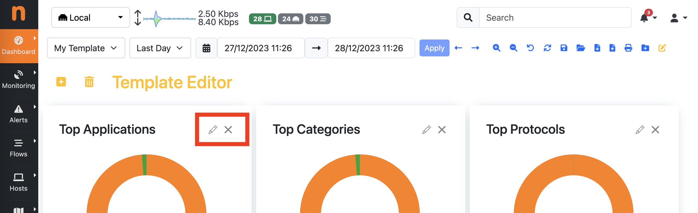
Действия виджета в режиме редактирования
Нажав на кнопку редактирования на виджете, можно его настроить, в том числе изменение:
отображаемый заголовок
размер виджета (высота и ширина)
привязка ко времени (смещение по времени используется для отображения информации о трафике со сдвигом по времени относительно времени, выбранного для отчета, например, отображение информации о трафике 1 неделю назад, чтобы сравнить ее с текущим трафиком)

Настройки виджета
Также доступен переключатель «Дополнительные настройки». Это позволяет глубоко настроить содержимое виджета, изменив настройки, включая URL-адрес REST API и параметры, которые закодированы в формате JSON.
В конфигурации JSON также поддерживаются специальные токены для динамической передачи аргументы виджетов, например. $IFID$ динамически заменяется текущим идентификатор интерфейса, выбранный в ntopng при отображении отчета.

Расширенные настройки виджета
Любые изменения в шаблоне автоматически сохраняются (кнопки «Сохранить» в редактор шаблонов).